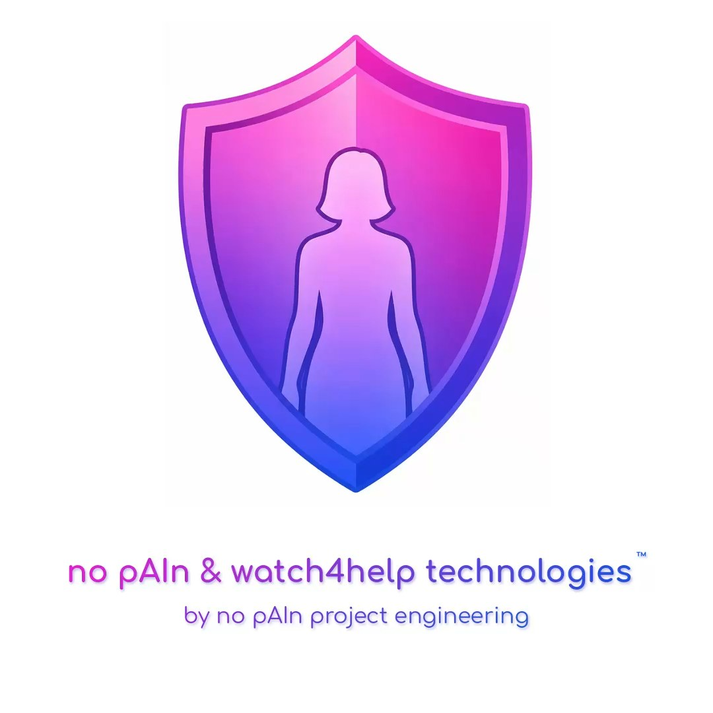
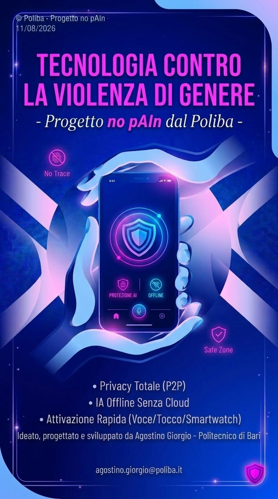

Iniziative locali e progetti pilota
Valutiamo iniziative sul territorio e progetti pilota, a partire da una dimostrazione e da obiettivi condivisi.
Mettere uno strumento a disposizione è il primo passo. Farlo conoscere, spiegarne l'uso e inserirlo in un contesto di supporto è altrettanto importante.

Valutiamo iniziative sul territorio e progetti pilota, a partire da una dimostrazione e da obiettivi condivisi.
Un confronto con chi lavora ogni giorno con le persone, per capire utilità, modalità d'uso e limiti dello strumento.
Approfondiamo proposte per gruppi di utenti, iniziative di sensibilizzazione e sostegno a progetti sul territorio.
App gratuite da scaricare per Android, iPhone e smartwatch, un pulsante acquistabile da chiunque, nessun account e nessun cloud da gestire. E un progetto descritto in pubblicazioni scientifiche.
